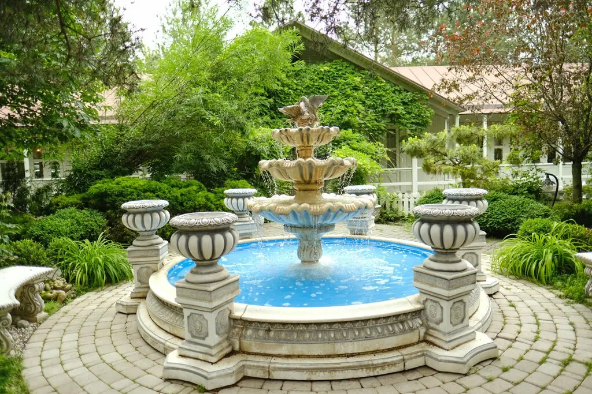
Атаманская усадьба
Сад с фонтанами, пруд с лебедями и донская кухня на левом берегу Дона. Тихо, зелено и совсем не по-городскому.
5,0 · 1311 оценок на картах
Прогулка по усадьбе
Листайте вбок: четыре места, где можно оказаться уже сегодня вечером.
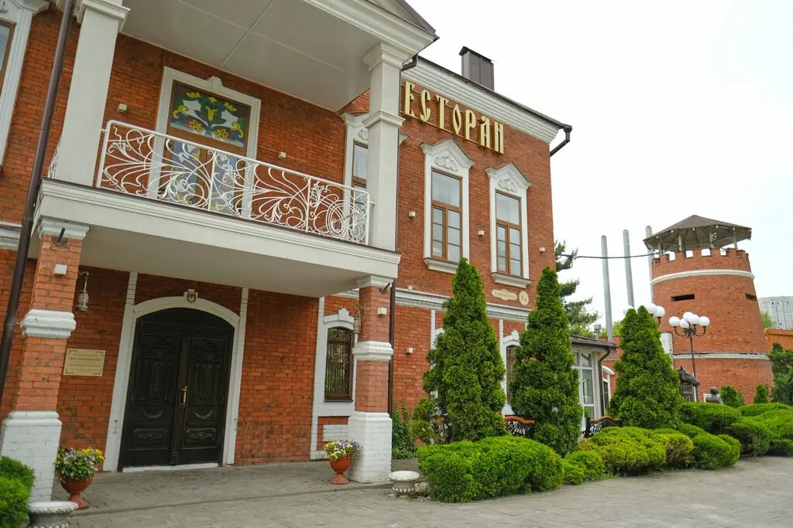
Дом
Красный кирпич, балконы и аккуратные дорожки.
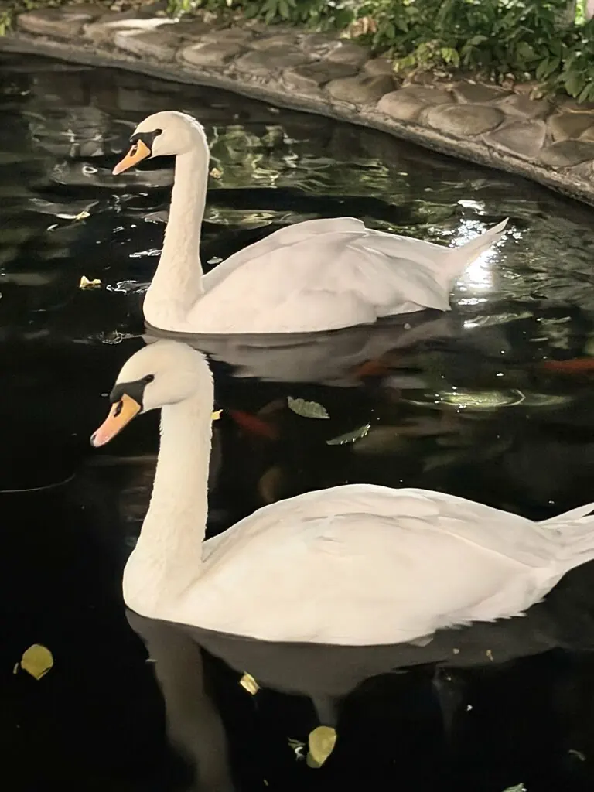
Пруд с лебедями
Лебеди и золотые рыбки прямо под окнами.
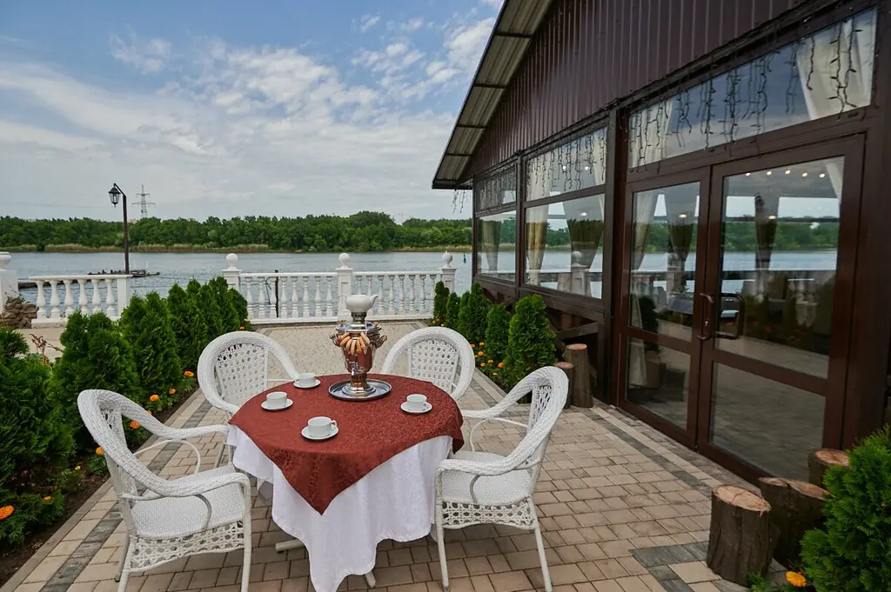
Летняя терраса
Столы на свежем воздухе и живая музыка.
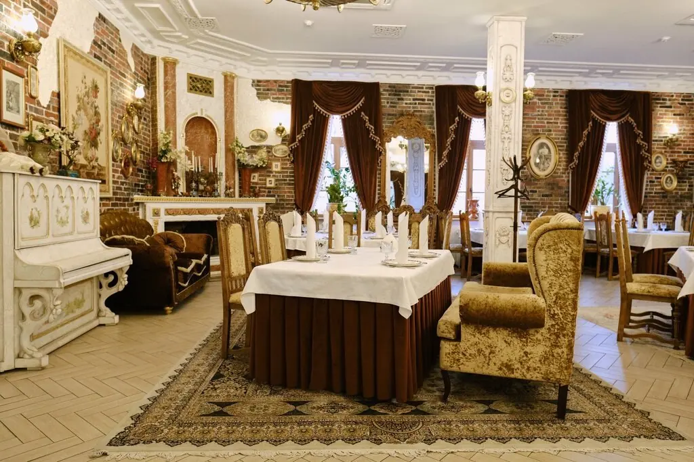
Парадный зал
Камин, резная мебель и белые скатерти.
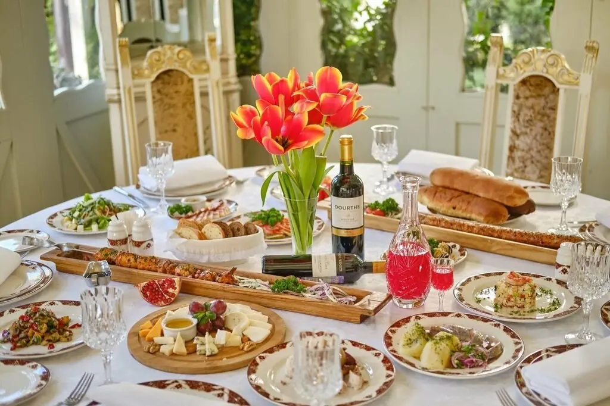
Донской стол
Народная кухня с домашним вкусом, в том числе горилка собственного производства, как пишут гости.
Уха из карпа и осетра1 200 ₽
Борщ из телятины750 ₽
Судак по-домашнему1 200 ₽
Шашлык из осетрины980 ₽
Сельдь собственного посола700 ₽
Медовый торт400 ₽
Часть меню с Яндекс Карт, цены уточняйте при заказе.
Праздник в усадьбе
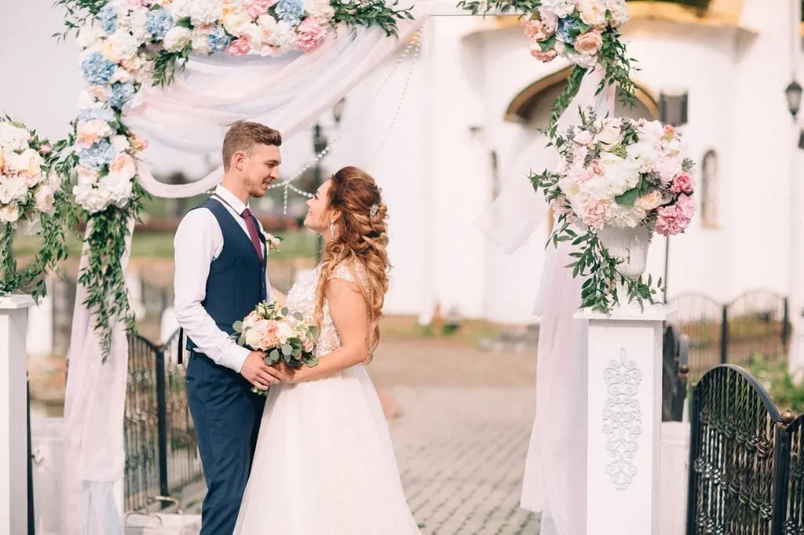
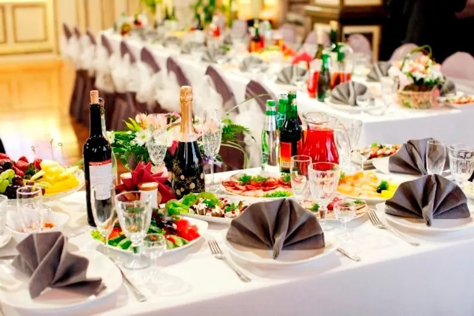
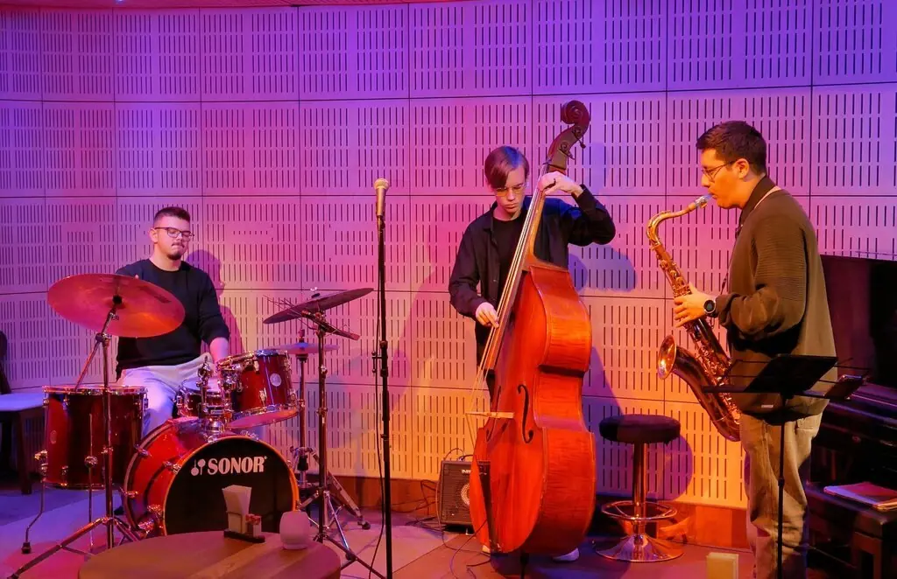
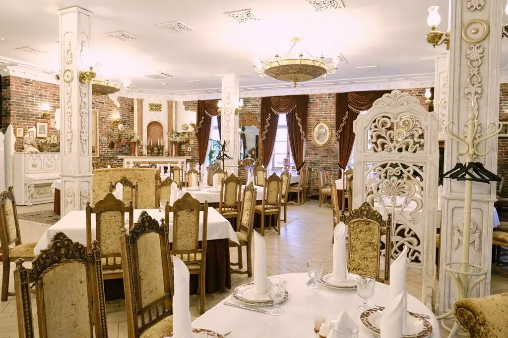
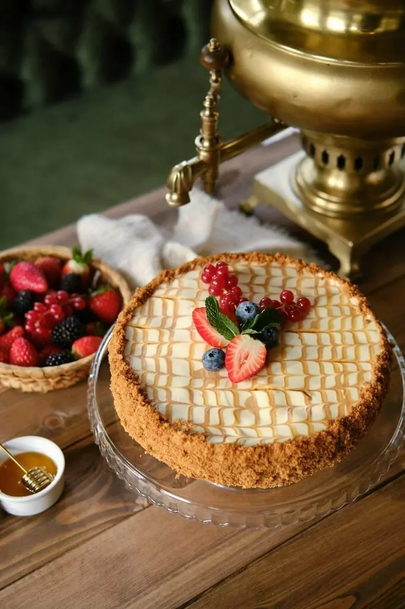
Книга гостей
Настолько богатый интерьер, что сразу и не понять, что всё вкусно по-домашнему.Ольга Бойко
Огромная летняя терраса, живая музыка! Кухня 5+!Аким Армянов
Отличная донская кухня! Душевно! Музыка живая!Марина Синюкина
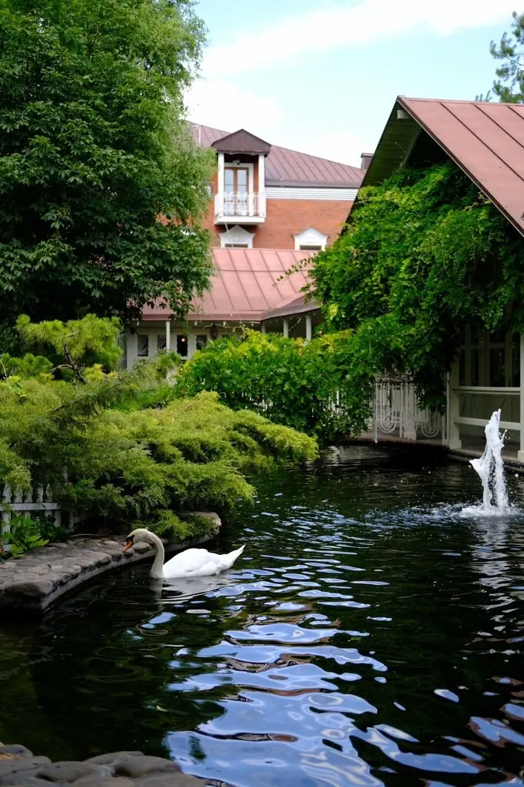